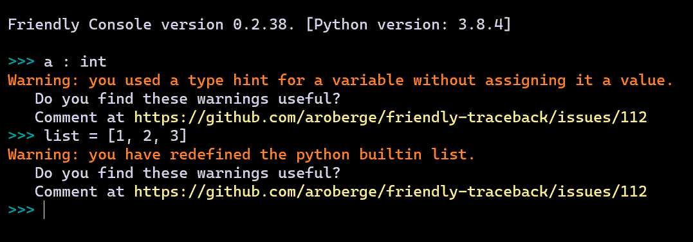

Introducing friendly
André Roberge
PyCon Education Summit - May 12, 2021https://github.com/aroberge/friendly
https://github.com/aroberge/talks
Apparent talk outline
from talk_utils import *
questions = ["what", "where", "why"]
questions.append("who")
while time_left():
if demo_time():
include_in_slide_title("demo")
else:
include_in_slide_title(choice(questions))Who ... am I?
Python hobbyist trying since 2004 to help other people learn Python through various projects:
- RUR-PLE
- Reeborg's World
- Crunchy
- docpicture
- AvantPy
- friendly
- etc.
Who ... are you?
I assume that most of you have experience and/or interest in helping beginners learn Python.
What ... is friendly?
A tool that enhances Python tracebacks to make them easier to understand.
It used to be called friendly-traceback.
>>> import this
...
Explicit is better than implicit.
...friendly-traceback is more explicit than friendly.
Why the name change?"Demo" 1
import turtle as t
for i in range(4):
t.forward(100)
t.left(90)"Demo" 1: expected
"Demo" 1: result
> python turtle.py
Traceback (most recent call last):
File "turtle.py", line 3, in <module>
import turtle as t
File "...\turtle.py", line 6, in <module>
t.forward(100)
AttributeError: partially initialized module 'turtle'
has no attribute 'forward'
(most likely due to a circular import)"Demo" 1: running with friendly

"Demo" 1
python -im friendly turtle.py"Demo" 1: traceback and hint()
"Demo" 1: what()
"Demo" 1: why()

"Demo" 1: where()
"Demo" 1: www()

"Demo" 1: what() in French
"Demo" 1: what(...)

How to deal with typos?


Installation


"Demo"
Summary
Replace an REPL
from friendly[.X] import start_console
start_console(...)
from friendly[.X] import *
install(...)
from friendly[.X] import *
from friendly[.X] import run
run("my_program.py", ...)
Mu
"Demo"


"Demo"
Python 3.10 - NameError
friendly - NameError
friendly - NameError
Python 3.10 - NameError

Include Fine Grained Error Locations in Tracebacks
May 8 2021
Traceback (most recent call last):
File "test.py", line 2, in <module>
x['a']['b']['c']['d'] = 1
^^^^^^^^^^^^^^^^
TypeError: 'NoneType' object is not subscriptable
Thanks to Alex Hall's executing
Documentation
Why the name change?
from friendly.idle import ...
from friendly.mu import ...
from friendly.ipython import ...
from friendly.jupyter import ...
# are better than
from friendly_traceback.idle import ...Besides, traceback is not exactly a beginner-friendly term and, in the future, friendly might do more than simply helping with tracebacks ...
Warnings
Why ... import *?

Who influenced the design of friendly?
- Nicholas Tollervey (Mu)
- Aivar Annamaa (Thonny)
- Julien Palard (HackInScience)
- Alex Hall (futurecoder + many packages)
- Sylvain Desodt (DidYouMean-Python inspired by Raymond Hettinger)
- Michael Kennedy, Brian Okken, and Hannah Stepanek in PythonBytes podcast #220
- plus many others who filed issues.
Can YOU think of possible improvements to include in the road to version 1.0?
Code
https://github.com/aroberge/friendlyYou will find a link to the documentation.
But perhaps there is a more pythonic way ...
Documentation üòè
python -m pip install friendly
python -m friendly
>>> www()
if time_left():
live_demo()